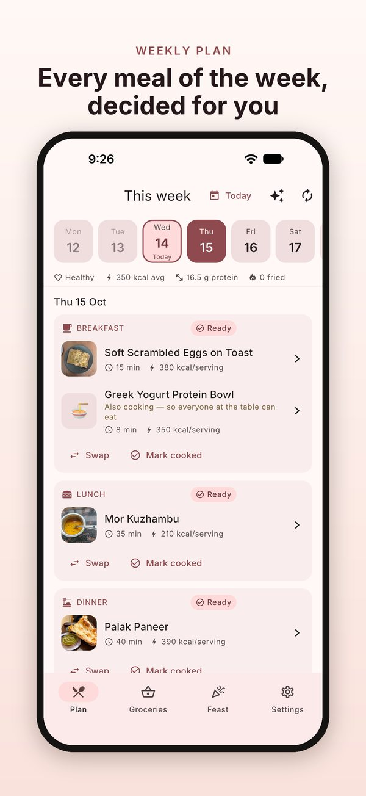
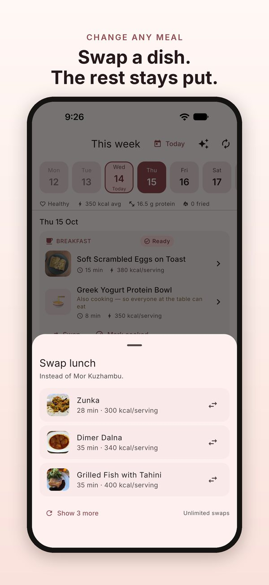
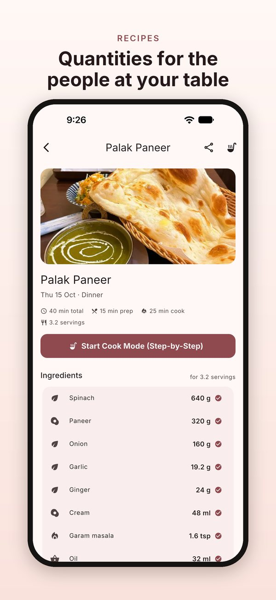
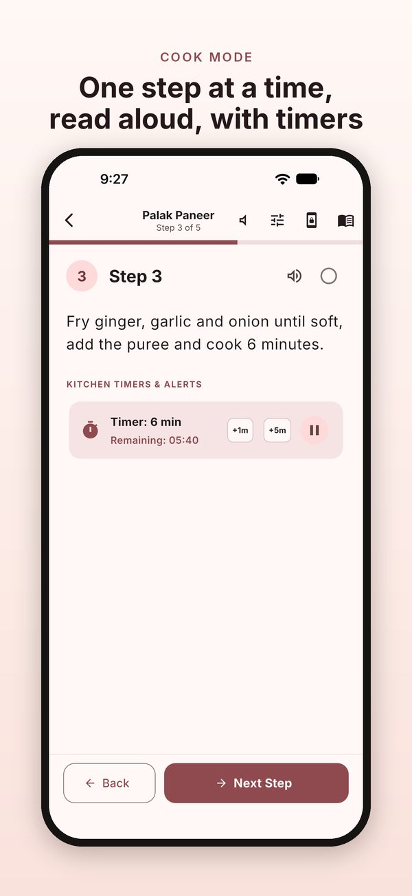
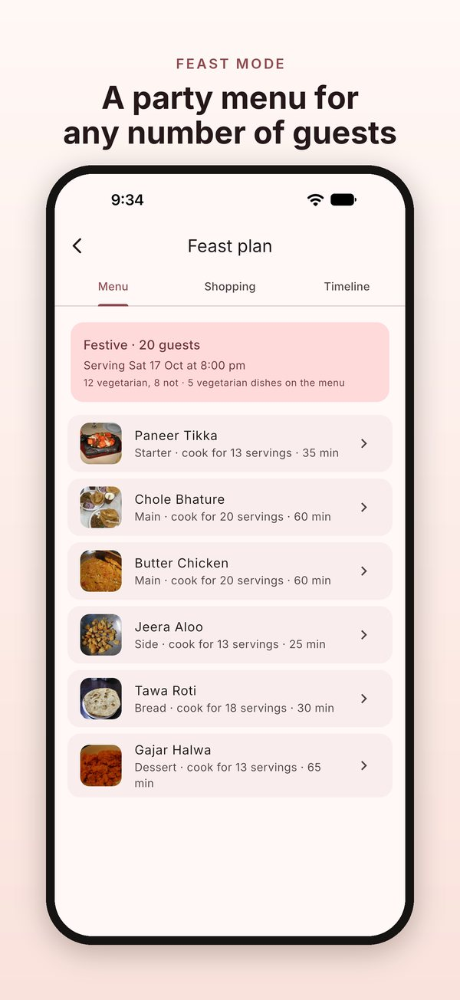

Your household
Pick the cuisines you cook and add up to 12 people. A child counts as 0.6 of a serving, so portions fit the people eating.
Tell Mealy who eats at your table and how each person eats. It plans breakfast, lunch and dinner for seven days, with the recipes and the shopping list. For iPhone and iPad.
Mealy is free with ads. Mealy Pro, monthly or yearly, removes the ads and the weekly limits.





Pick the cuisines you cook and add up to 12 people. A child counts as 0.6 of a serving, so portions fit the people eating.
Vegan, vegetarian, egg-vegetarian or non-vegetarian, with the meats each person eats. Allergies and dislikes stay off the whole plan. When one dish doesn’t suit everyone, a second dish is planned beside it.
21 meals at the health level you choose, within the time you have for each meal. No dish repeats within four days. Swap any meal that hasn’t happened yet, or rebuild the rest of the week.
Ingredients scaled to your household, numbered steps and nutrition per serving. Cook Mode shows one step at a time, can read it aloud, and runs the timers in the steps.
A shopping list for the next one, two or three days, minus what your pantry already holds. Tick off what you buy and it moves to the pantry; cook a meal and its ingredients come out again.
Guests, how many are vegetarian, the occasion and the serving time: you get a menu, a separate shopping list and a cooking timeline that counts back from serving time. Your weekly plan is not touched.
Cook Mode keeps the screen awake and reads each step aloud with your iPhone’s own voices.
The whole app on the bigger screen, Cook Mode included: set it on the counter and follow along.
Yes. Mealy is free with ads. The free version plans the whole week and includes 3 meal swaps a week, a shopping list for the next day and one feast a month.
Watching a short ad gives you one more swap, one more feast, or longer shopping lists for the rest of that day.
Mealy Pro removes all ads and gives you unlimited swaps, unlimited feasts and shopping lists up to three days ahead. It is an auto-renewing subscription, monthly or yearly. There is no free trial.
Yes. Each person in the household gets their own diet: vegan, vegetarian, egg-vegetarian or non-vegetarian, with the meats they eat (beef, chicken, pork, mutton or fish).
When one dish doesn't suit everyone at the table, Mealy plans a second dish beside it, marked "Also cooking — so everyone at the table can eat".
Yes. In setup, add allergies and dislikes by tapping the ones listed or typing your own. They stay off the whole household's plan.
This is a filter, not a safety guarantee. Always read a dish's ingredients before cooking it for someone with an allergy.
Not completely. Mealy needs an internet connection when you open it. Your plan is built on your device, from the cookbook that comes with the app, and your household, plan and pantry are stored on your device.
On your device. There is no account. Your household, diets, allergies, plan, pantry, shopping lists and your own recipes stay on your device. Mealy doesn't upload them, and it has no analytics of its own.
The free version shows ads through Unity LevelPlay, which collects advertising and device identifiers. Mealy never sends it anything about your household, diets, plan or pantry. Read the full Privacy Policy.
Go to Settings › "Delete my data". It erases everything Mealy stores on your device. Uninstalling Mealy also removes it.
If iCloud Backup is on, your backup can include Mealy's data, as it does for any app.
Yes, in My dishes. Your own dishes join the plan and the shopping list like any other dish.
A child counts as 0.6 of a serving. Recipe quantities are scaled to the servings at your table, so two adults and two children come to 3.2 servings. You can add up to 12 people.
Yes. Swap any meal that's still ahead: Mealy shows three other dishes that suit your household, and "Show 3 more" gives you more. The free version includes 3 swaps a week; Mealy Pro has no limit.
You can also rebuild the rest of the week. Meals you've already cooked stay as they are, and the new plan starts from your next meal.
Yes, with Feast. Enter the number of guests, how many are vegetarian, the occasion (casual, festive or formal) and the serving time. You get a menu (for a festive meal: a starter, mains, a side, bread and dessert) with each dish scaled to the guests, its own shopping list, and a timeline that counts back from serving time. Tap "Notify Me" to get a notification for each step.
Your weekly plan, shopping list and pantry aren't touched. The free version includes one feast a month; Mealy Pro has no limit.
The app and its recipes are in 15 languages: English, Hindi, Bengali, Tamil, Spanish, Portuguese, French, German, Italian, Turkish, Indonesian, Arabic, Chinese, Japanese and Russian. You choose the language at the start of setup.
Mealy Pro is billed to your Apple Account. Cancel it in your Apple Account settings at least 24 hours before the end of the current period, or it renews. Cancelling takes effect at the end of the current period. Refunds are handled by Apple, under its own policy.
To get Pro back after reinstalling Mealy, tap Restore purchases in Settings › Subscription.
In the app, go to Settings › Contact support. It opens an email to us. Or write to wekstuff@gmail.com. We use your email only to reply.
In the app, go to Settings › Contact support: it opens an email to us. Or write to wekstuff@gmail.com. Tell us which device you use and what happened.
Your email is used only to reply to you.